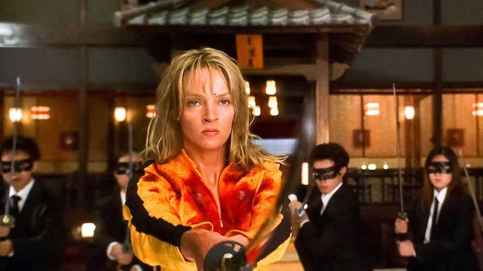

Sex, blood and Communist Party virtues
A gory film tests prudish government censors

Jul 30th 2026
“Kill Bill” is among the most violent works in the bloodsoaked filmography of Quentin Tarantino. When the two volumes of the film are combined they form a four-and-a-half-hour gore-fest known collectively as “The Whole Bloody Affair”. The compilation has been hitting silver screens around the world this year and in August will be aired in China, where violence, cursing and sex are thoroughly scrubbed from all forms of entertainment.
Mr Tarantino’s style seems like a bad fit for China, or at least for the Communist Party. The China Film Administration (CFA), part of the party’s propaganda department, regularly blocks the release of steamy films. Only one of Mr Tarantino’s flicks has made it to Chinese cinemas: “Django Unchained” in 2013. But its opening was abruptly cancelled; it was released a month later, more heavily censored. Another, “Once Upon a Time in Hollywood”, was approved, then cancelled for unclear reasons.
Fans have been thrilled by the approval of “The Whole Bloody Affair” but also curious about what they will not see. China does not have a content-rating system. The party’s longstanding policy on entertainment is that all content must be wholesome enough for universal consumption. (A four-year-old and a 40-year-old should be able to enjoy all the same films, thinks the party.) The CFA has therefore become adept at purging provocative elements from Western cinema by cutting sex and violence, digitally adding clothing to nudes and zooming in during tricky scenes to crop out all it deems improper.
Whether the decapitations and eye-gougings in the upcoming release can be cut and still keep the plotline intact is anyone’s guess. Local film buffs also wonder if screening racier films this year is a response to dismal box-offices. Sales in the first half of 2026 dived by two-fifths on the same period last year, the lowest in a decade (excluding 2020 and 2022, when most theatres were closed due to covid-19). More than 550 cinemas closed in the first four months of the year. The release of Mr Tarantino’s picture along with a horror film called “Obsession”, which opened on July 24th, might be an attempt to boost audiences.
It is far from certain this will work. Insiders have long believed it will take a real rating system to protect kids while also giving grown-ups the blood and sex they want. For now the party seems unwilling to budge. If its censors can turn “The Whole Bloody Affair” into a film the whole family can enjoy, perhaps they are deserving of an Oscar. ■
Subscribers can sign up to Drum Tower, our new weekly newsletter, to understand what the world makes of China—and what China makes of the world.